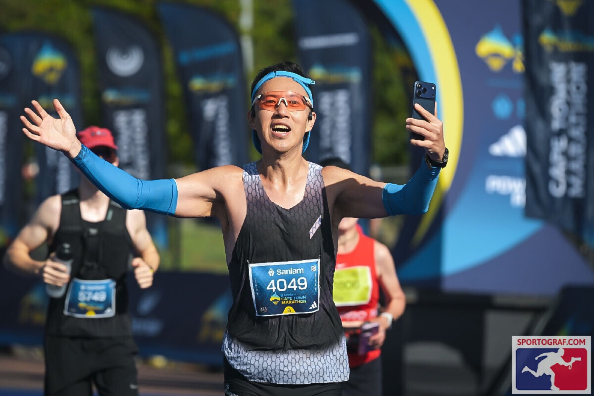

工作现场
从 HR 共享服务、流程标准化到 AI 转型，我关注方法如何进入日常运营。

马拉松记录
2016 年，为了减重，我从 2 公里开始跑步，逐步完成半马和全马。现在，我仍持续训练和参赛。
个人最好成绩3:05:30
全马比赛近 50 场
稳定月跑量350–450 km

工作方法
从真实问题开始，先看清流程与角色，再用系统和 AI 把重复工作变成可验证的服务。技术不是终点，稳定运行才是。
从 HR 共享服务、流程标准化到 AI 转型，我关注方法如何进入日常运营。
2016 年，为了减重，我从 2 公里开始跑步，逐步完成半马和全马。现在，我仍持续训练和参赛。

从真实问题开始，先看清流程与角色，再用系统和 AI 把重复工作变成可验证的服务。技术不是终点，稳定运行才是。